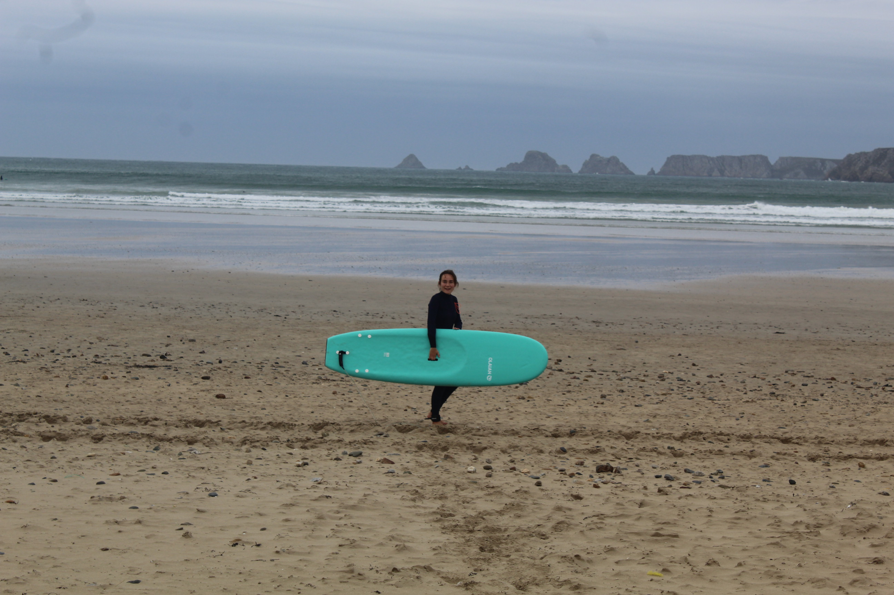
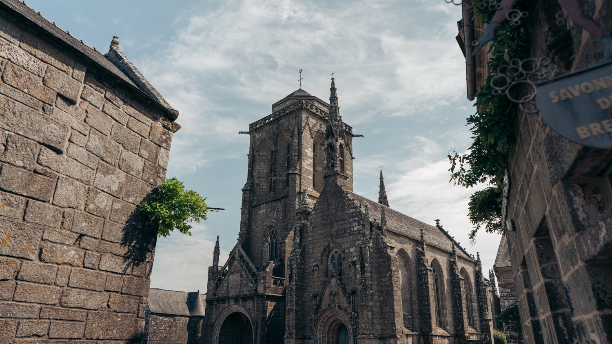
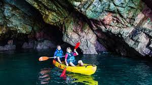

A la recherche du paradis perdu !
Visitez ce merveilleux endroit, caché au fin fond de la Bretagne. Située entre la rade de Brest et la baie de Douarnenez, la Presqu'île de Crozon est la pointe centrale du Finistère. Cette réserve naturelle est labellisée "Espace remarquable de Bretagne" pour son patrimoine géologique très important. Venez découvrir ses eaux turquoises, ses petites criques, ses falaises à couper le souffle, ses villages plein de charme...
Où se balader ?

Plage de l'île Vierge

Pointe de Pen-Hir

Pointe de Dinan
Quelles activités ?

Surfez sur la vague

Visitez Locronan
